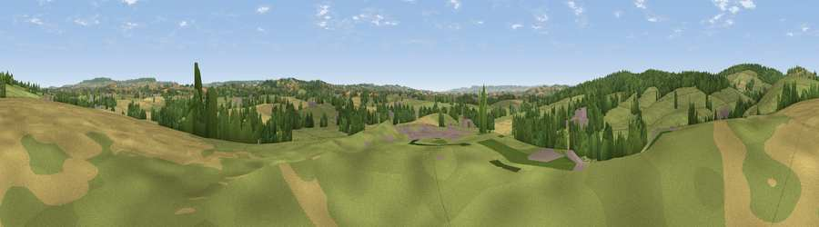

Viewpoint near Clyst St. Lawrence
#31227 in England · top 68% of its area beats it · near Clyst St. Lawrence · access?Where it is
The exact computed spot (SY 02125 99225). Click the marker for map links.
Public access: no public right of way or access land is recorded at this exact spot — it may be on private land. Computed from Natural England's CRoW access layer and OpenStreetMap rights of way — not the legal definitive map. Always verify locally.
The view, rendered

A 360° render of this exact spot computed from the terrain model, tree cover and land cover — summer colours, afternoon light, calibrated against photographs of famous viewpoints. Real trees, hedges and buildings will differ in detail.
The panorama
Grey silhouette: terrain skyline in each direction (720 bearings, Earth curvature and refraction included). Dashed green: skyline with trees (+15 m) and buildings (+8 m) as obstacles. Blue strip: how far the ground is visible on each bearing.
Where the view opens
Wedge length = distance to the farthest visible ground on that bearing (vegetation-aware). Rings at 10, 25 and 50 km.
What fills the view
69% grassland · 15% woodland · 15% cropland · 1% built-up
Angular shares of the visible panorama (visual magnitude), not map area. Landscape diversity 0.39 (0–1 Shannon).
Key numbers
More beautiful places nearby
The staircase of upgrades: each row has a higher view potential than everything closer. Driving times are estimates from straight-line distance, calibrated against real road routing — check an actual route before setting out.
| Place | Direction | Drive | Score |
|---|---|---|---|
| Viewpoint near Clyst St. Lawrence | N · 2 km | ~5 min | 55.7 |
| Viewpoint near Clyst Hydon | N · 3 km | ~7 min | 59.3 |
| Viewpoint near Whimple | ESE · 5 km | ~11 min | 64.6 |
| Viewpoint near West Hill | SE · 6 km | ~12 min | 65.4 |
| Viewpoint near Bradninch | NNW · 6 km | ~13 min | 72.5 |
| Viewpoint near Bradninch | NW · 7 km | ~14 min | 77.7 |
| Viewpoint near Tipton St John | SE · 12 km | ~22 min | 81.5 |
| Viewpoint near Colaton Raleigh | SE · 14 km | ~26 min | 82.1 |
50.78431, -3.38976 · source: screening · position refined by local search. Computed location — check access rights before visiting.